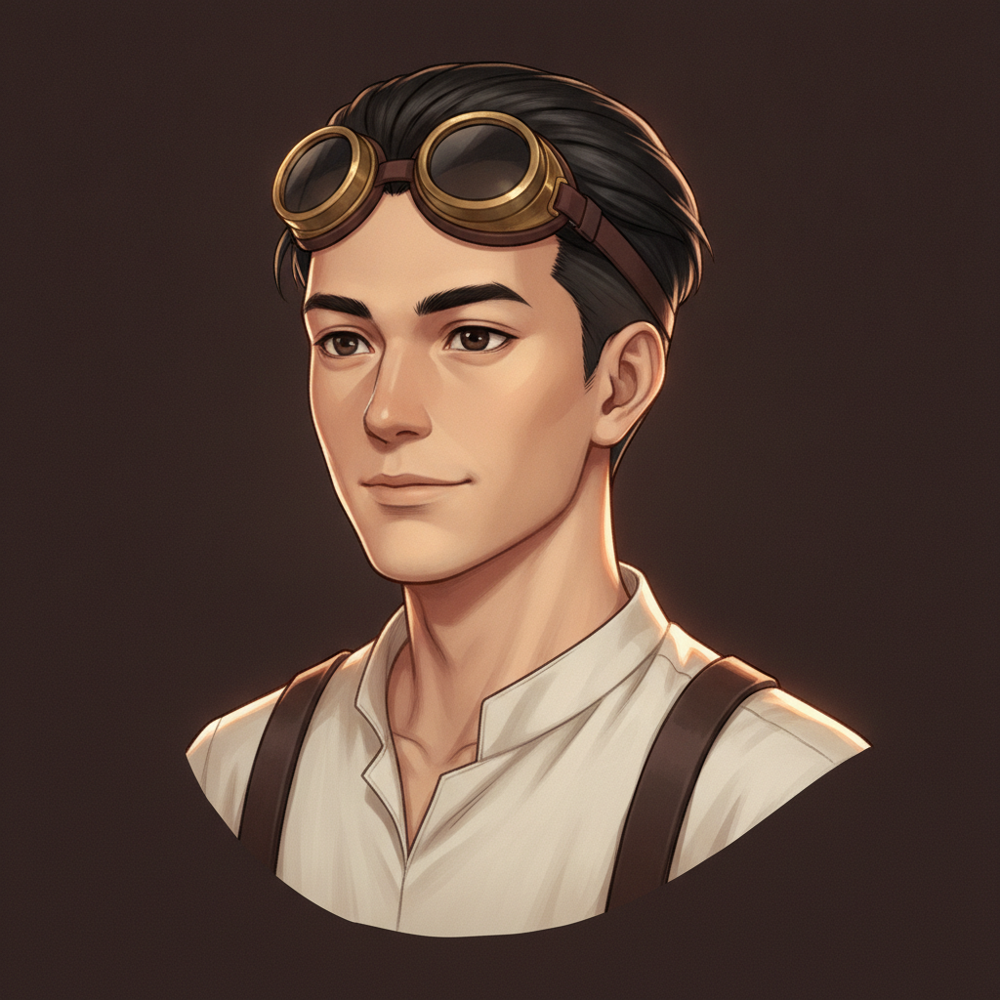
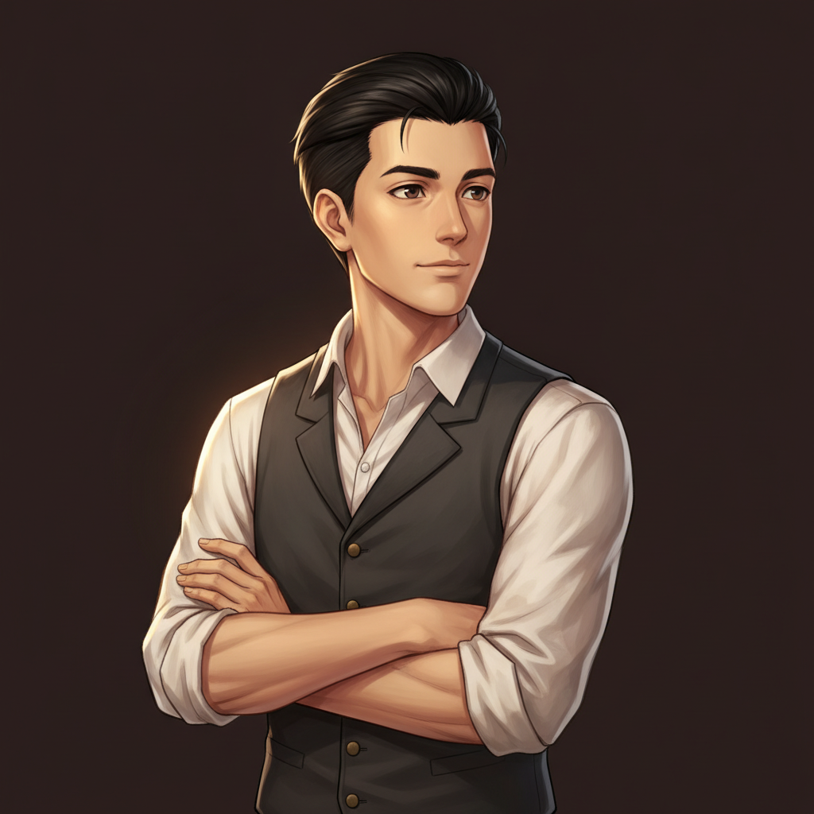
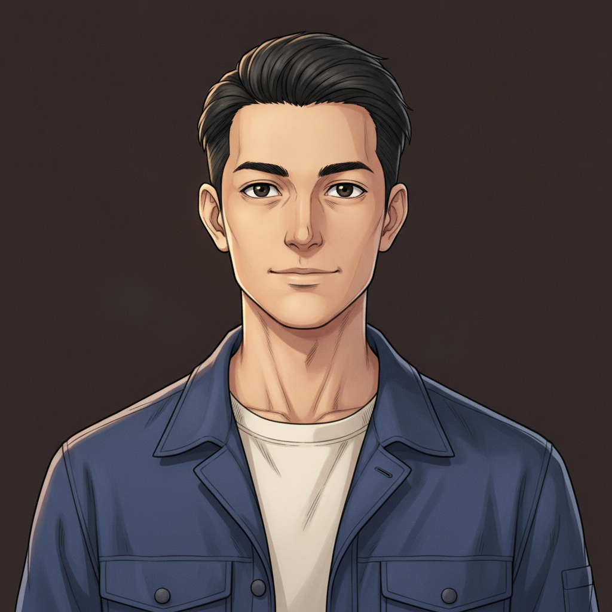
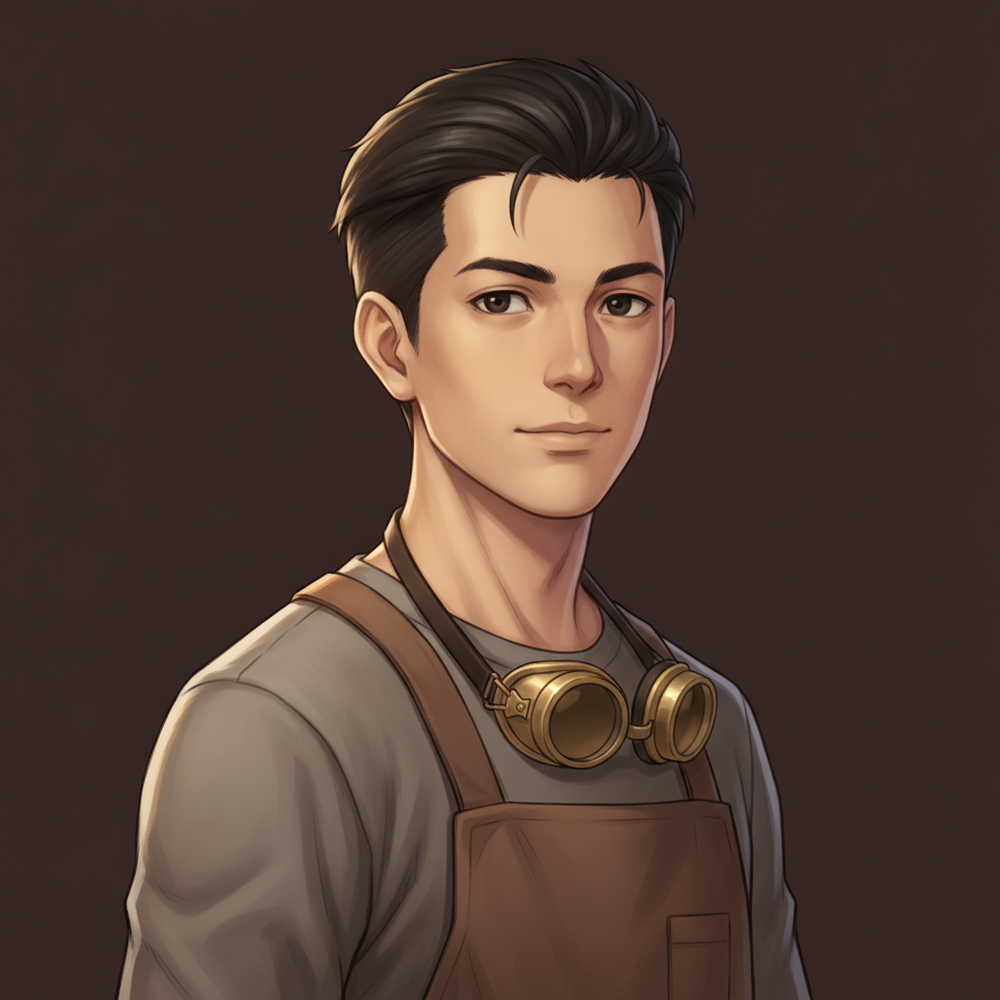
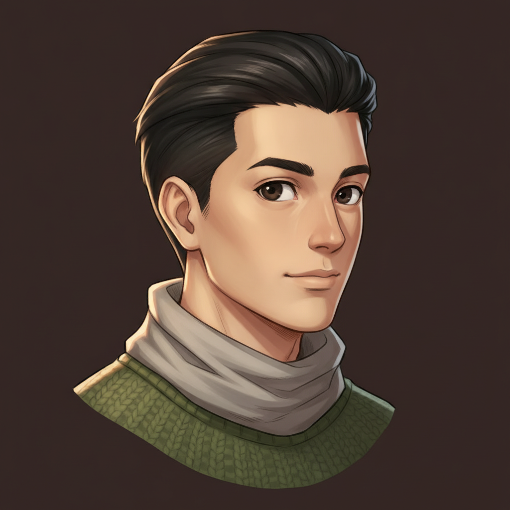
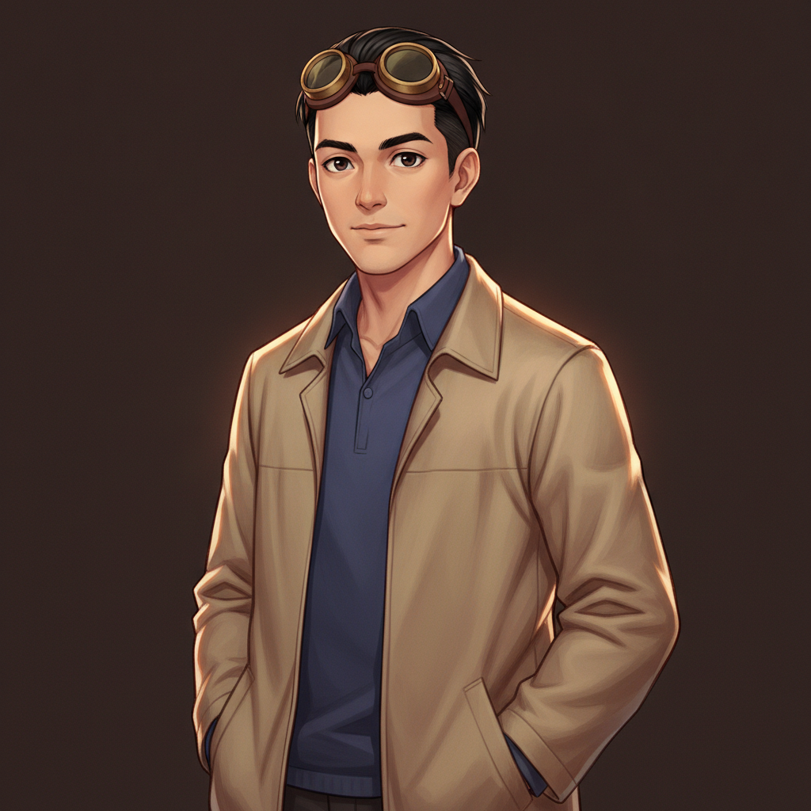

design constants: black undercut, dark eyes, late twenties, neutral expression, no gloves, no tool clutter.
Varied per candidate: framing, angle, pose, wardrobe, goggles (up / around neck / none). Text-only generations — no reference anchor, hence the actual diversity.
E1 · linen & suspenders — goggles up, close

head-and-shoulders, slight left turn, collarless cream linen shirt, dark suspenders.
E2 · the waistcoat — no goggles, arms crossed

waist-up three-quarter, charcoal wool waistcoat, rolled white sleeves.
E3 · plain navy jacket — no goggles, straight on

head-and-chest, open navy work jacket over cream henley, clean and simple.
E4 · workshop apron — goggles at the neck

waist-up angled, brown apron over grey shirt, goggles hanging at his chest.
E5 · sweater & scarf — no goggles, near profile

tight shoulders-up, strong three-quarter, moss-green knit, grey scarf.
E6 · tan jacket — goggles up, hands in pockets

hips-up relaxed lean, band-collar indigo shirt under open light-tan jacket.